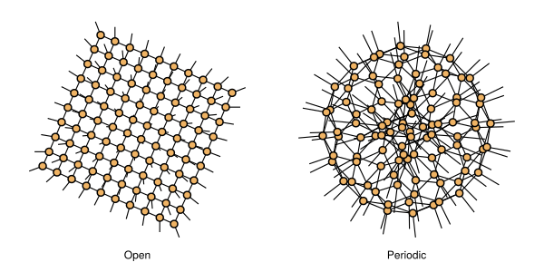
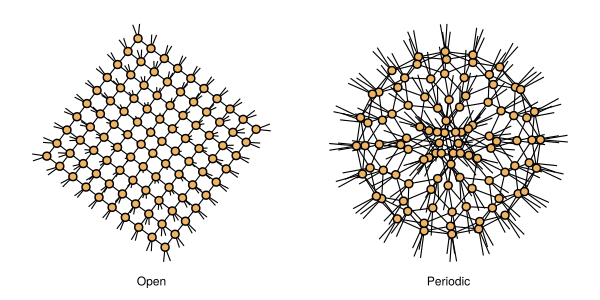

Projected Entangled Pair States (PEPS)
Projected Entangled Pair States (PEPS) are a Quantum Tensor Network ansatz whose tensors are laid out in a 2D lattice. Depending on the boundary conditions, the chains can be open or closed (i.e. periodic boundary conditions).
Projected Entangled Pair Operators (PEPO)
Tenet.ProjectedEntangledPair — TypeProjectedEntangledPair{P<:Plug,B<:Boundary} <: QuantumA generic ansatz representing Projected Entangled Pair States (PEPS) and Projected Entangled Pair Operators (PEPO). Type variable P represents the Plug type (State or Operator) and B represents the Boundary type (Open or Periodic).
Ansatz Fields
χ::Union{Nothing,Int}Maximum virtual bond dimension.
Tenet.ProjectedEntangledPair — MethodProjectedEntangledPair{P,B}(arrays::Matrix{AbstractArray}; χ::Union{Nothing,Int} = nothing, order = defaultorder(ProjectedEntangledPair{P}))Construct a TensorNetwork with ProjectedEntangledPair ansatz, from the arrays of the tensors.
Keyword Arguments
χMaximum virtual bond dimension. Defaults tonothing.orderOrder of the tensor indices onarrays. Defaults to(:l, :r, :u, :d, :o)ifPis aState,(:l, :r, :u, :d, :i, :o)ifOperator.